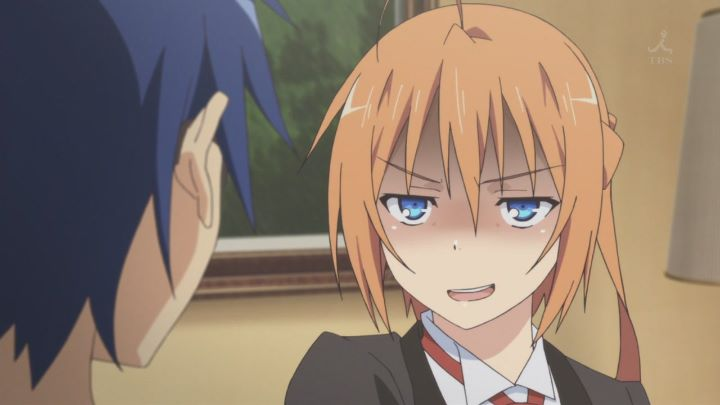

"Mayo Chiki!" is a 2011 anime series about a teenage boy who get nosebleeds whenever girls touch him, and about a teenager girl who pretends to be a male butler. The two meet, fight, then fall in love. Good night everybody!Yes, this type of story isn't unusual in the realm of anime. Anyone not familar with anime is might be turned off already. But a roll-your-eyes hook doesn't automatically mean a bad show. If executed with even a bit of competency, it can be a guilty pleasure for anyone who calls themself an otaku. That's where "Mayo Chiki!" falls for me. Against my best judgement, I found the characters to be charming and enjoyed "Mayo Chiki!" It isn't a great, or even particularly good show, but can be a decent romantic comedy.Anyway, Kinjiro is a teenager who gets a nosebleed whenever a girl touches him. Naturally, this causes a lot of confusion amongst his friends (most assume he must be gay). Subaru Konoe is the young butler to the rich female student Kanade, and Subaru's beauty and manners make him the crush of the female student body. Except Subaru is a girl, cross-dressing to fullfill her family's promise to sever Kanade's family. When Kinjiro accidently walks into her in the washroom, this causes more confusion. Kanade ultimately confronts Kinjiro about the incident, and the three make a deal: they'll help Kinjiro get over his fear of women, in exchange for helping keep Subaru's identity a secret. Of course, this involves the two going on fake dates... which confuses the public further. Fairly quickly, Kinjiro and Subaru start to have feelings for each other. Perhaps too quickly. Most of the show involves some incident or another threatening Kanade or other members of the group, and Subaru acting to protect them. And some things don't always make sense, or come off as pleasent: Kanade's personality is that of a sadistic flirt, and I always felt uncomfortable whenever she playfully threatens Kinjiro, despite any well-meaning intentions at heart. But more often than not, the comedy lands, and the show remains fairly entertaining as the story draws out. The two leads are adorable together, and I felt for them, looking forward to them becoming true to their feelings. And appreciatively, their relationship moves forward a little more than the average romantic comedy anime. The art and animation is a bit below average, disappointing to see in 2011. The music has a catchy opening theme though. The English dub resembles an example of weak form Sentai Filmworks was known for early in their life, accptable, but a little awkward. Regarding fan-service: there isn't much of it, although there are a couple scenes that were actually censored before the home video release, and there are a few scenes with saucy dialogue."Mayo Chiki!" isn't great. It isn't even all that good. But I have a soft spot for it anyway, although I wouldn't admit it too loudly.
- "Ani" More reviews can be found at : https://2danicritic.github.io/ Previous review: review_Mary_and_the_Witch's_Flower Next review: review_Mazinger_Z_-_Infinity